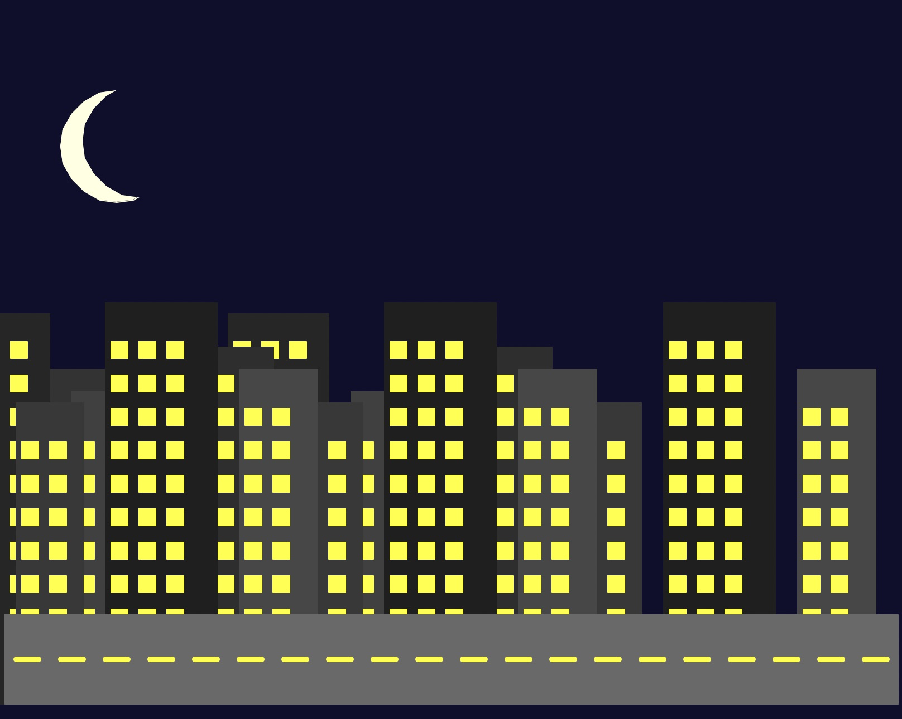

Turtle Python Coding Project
Through python code, I created a Urban Nightscape. Using repeating fucntions to fill the screen with buildings. Below is the Python code for the Turtle graphics project. This code uses the `turtle` module to draw various shapes and scenes.
p5.py Code:
'''
Orion Rice
Project Variation #2
'''
import turtle
#Constants
'''added to use offset comand'''
SCREEN_WIDTH = 800
SCREEN_HEIGHT = 600
BACKGROUND_COLOR = "#0F0F2D"
ROAD_Y = -250
ROAD_HEIGHT = 80
ROAD_COLOR = "dim gray"
DASH_COLOR = "yellow"
DASH_LENGTH = 20
DASH_GAP = 20
WINDOW_SIZE = 15
WINDOW_COLOR = "yellow"
WINDOW_GAP_X = 25
WINDOW_GAP_Y = 30
MOON_COLOR = "light yellow"
MOON_MASK_COLOR = BACKGROUND_COLOR
MOON_X = -300
MOON_Y = 200
MOON_RADIUS = 50
#Screen Setup
screen = turtle.Screen()
screen.setup(SCREEN_WIDTH, SCREEN_HEIGHT)
screen.bgcolor(BACKGROUND_COLOR)
screen.title("p4")
t = turtle.Turtle()
t.speed(0)
t.hideturtle()
#Drawing Functions
def draw_rectangle(x, y, width, height, color):
t.penup()
t.goto(x, y)
t.pendown()
t.color(color)
t.begin_fill()
for _ in range(2):
t.forward(width)
t.left(90)
t.forward(height)
t.left(90)
t.end_fill()
def draw_window(x, y, size, color):
draw_rectangle(x, y, size, size, color)
def draw_building(x, y, width, height, color, window_size, window_gap_x, window_gap_y, window_color):
draw_rectangle(x, y, width, height, color)
cols = (width - 10) // window_gap_x
rows = (height - 20) // window_gap_y
for row in range(int(rows)):
for col in range(int(cols)):
wx = x + 5 + col * window_gap_x
wy = y + 10 + row * window_gap_y
draw_window(wx, wy, window_size, window_color)
def draw_crescent_moon(x, y, radius, fill_color, mask_color):
t.penup()
t.goto(x, y)
t.color(fill_color)
t.pendown()
t.begin_fill()
t.circle(radius)
t.end_fill()
t.penup()
t.goto(x + radius * 0.4, y + radius * 0.1)
t.color(mask_color)
t.pendown()
t.begin_fill()
t.circle(radius)
t.end_fill()
def draw_road(y, height, color, dash_color, dash_length, dash_gap):
draw_rectangle(-SCREEN_WIDTH / 2, y, SCREEN_WIDTH, height, color)
t.color(dash_color)
t.width(5)
x_start = -SCREEN_WIDTH / 2 + dash_length / 2
dash_y = y + height / 2
for x in range(int(x_start), int(SCREEN_WIDTH / 2), dash_length + dash_gap):
t.penup()
t.goto(x, dash_y)
t.pendown()
t.forward(dash_length)
#Building Data
buildings_data = [
(-380, -250, 80, 300, "gray20"),
(-280, -250, 60, 250, "gray30"),
(-200, -250, 90, 350, "gray15"),
(-90, -250, 70, 280, "gray25"),
(10, -250, 80, 320, "gray18"),
(110, -250, 60, 270, "gray22"),
(190, -250, 100, 360, "gray12"),
(310, -250, 70, 300, "gray28"),
]
# Duplicate Buildings
# 1. List Concatenation with Offset
offset = -250
duplicated_buildings = [(x + offset, y, width, height, color)
for x, y, width, height, color in buildings_data]
buildings_data.extend(duplicated_buildings)
# 2. List Comprehension
num_duplicates = 1
offset_multiplier = -250
buildings_data.extend([
(x + i * offset_multiplier, y, width, height, color)
for i in range(1, num_duplicates + 1)
for x, y, width, height, color in buildings_data[:len(buildings_data)//num_duplicates]
])
#Draw the Scene
for b_data in buildings_data:
draw_building(*b_data, WINDOW_SIZE, WINDOW_GAP_X, WINDOW_GAP_Y, WINDOW_COLOR)
draw_crescent_moon(MOON_X, MOON_Y, MOON_RADIUS, MOON_COLOR, MOON_MASK_COLOR)
draw_road(ROAD_Y, ROAD_HEIGHT, ROAD_COLOR, DASH_COLOR, DASH_LENGTH, DASH_GAP)
screen.mainloop()